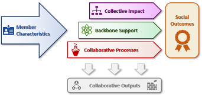

These dashboards turn survey data from youth sport, physical activity, and play-equity coalitions into a shared language for how collaboration forms, matures, and creates impact. Before you dive in, here's the thinking behind the data.
The challenge
Over the last decade, coalition-based efforts to reform youth sport have proliferated. Communities are organizing to get more young people into high-quality programming and to make sport, physical activity, and play more equitable. Yet there's been little evidence about which structures, policies, and practices actually help these coalitions succeed.
Context
Complex social problems rarely yield to any single organization. A backbone organization coordinates a network of partners — aligning activities, sharing resources, and giving the collective a unified direction.
A highly structured way of working together (Kania & Kramer, 2011): a common agenda, shared measurement, and mutually reinforcing activities. It's a destination few coalitions have fully reached — a useful north star, not a starting line.
To capture the earlier, formative stages, the framework draws on Community Coalition Action Theory (Butterfoss & Kegler, 2009) — how coalitions develop, function, and build the community capacity that leads to real social outcomes.
The logic model
The framework is a roadmap: it breaks coalition building into connected stages, from who is at the table through to community-level change. Each stage is a page in the dashboards, color-coded throughout.

Each stage in detail
Why it matters for your coalition
The aim is practical: to put meaningful data directly in the hands of coalitions to strengthen their work.
What past research suggests
Past research found trust in the backbone to be among the highest-rated measures, while involvement in decision-making was the lowest — members tend to trust their backbone even when they aren't deeply involved.
In prior research, coalitions members saw as more equitable were also seen as more productive, and equity was tied to greater impact on both organizational capacity and systems change.
Earlier research linked external legitimacy — respect from outside stakeholders — to stronger perceived impact, and found it tended to be higher in coalitions active for more than three years.
Members join for both practical ("functional") and transformative reasons; past research suggests balancing day-to-day value with long-term change shapes how members judge the coalition's impact.
Everything above lives in the interactive dashboards — color-coded and broken down by domain.
See the dashboards →